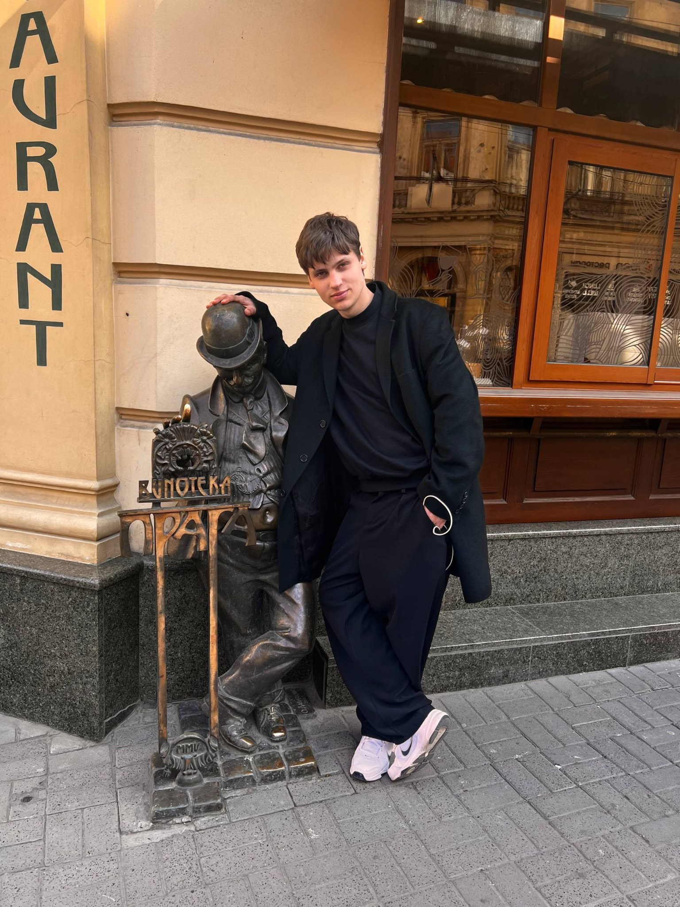

Зрозуміти задачу
Визначити мету, контекст і те, що справді потрібно покращити.
Маю практичний досвід у банківській сфері та digital-проєктах. Працював із перевіркою інформації, документами й операційними задачами. Розвиваю AI Creating та автоматизацію: досліджую інструменти, створюю власні експерименти й шукаю способи перетворювати ідеї на корисні цифрові рішення.

Мій спосіб роботи — розібратися в задачі, знайти інструмент, перевірити гіпотезу та вдосконалити результат.
Визначити мету, контекст і те, що справді потрібно покращити.
Підібрати AI-сервіси та цифрові рішення під конкретну потребу.
Зібрати робочий прототип, протестувати логіку та оптимізувати кроки.
Оцінити якість, помітити слабкі місця й зробити наступну ітерацію.
Зараз формую практичну базу в AI та автоматизації. Нижче — напрями розвитку й типи рішень, над якими навчаюся працювати.
Вивчаю генеративні інструменти для створення візуального контенту, роботи з ідеями та експериментів із цифровими форматами.
Досліджую автоматизацію повторюваних задач, логіку workflow та зв’язування цифрових інструментів.
Маю практичне знайомство з соціальними платформами, контентними форматами та тестуванням підходів у digital-середовищі.
* НАВЧАЛЬНІ ТА РОЗВИВАЛЬНІ НАПРЯМИ. КОМЕРЦІЙНІ РЕЗУЛЬТАТИ НЕ ЗАЯВЛЯЮТЬСЯ.
Поєдную практичні навички з банківських і digital-процесів із постійним навчанням. Відкритий до суміжних спеціалізацій та готовий поглиблювати знання відповідно до задач команди.
Технології змінюються — важливо вміти швидко розібратися, поставити правильні питання та застосувати знання на практиці.
Практичні навички з різних сфер, які допомагають мені розвиватися далі та адаптуватися до нових професійних задач.
Досвід опрацювання заявок, перевірки даних і документів відповідно до встановлених процедур. Робота з інформацією, виявлення невідповідностей, уважне дотримання інструкцій та передача нестандартних випадків на додатковий розгляд. Цей досвід сформував дисципліну, відповідальність і розуміння важливості точності в операційних процесах.
Робота з акаунтами та контентом для TikTok, Instagram і YouTube, тестування відеоформатів, публікація матеріалів і спостереження за результатами.
Поглиблюю знання AI-інструментів та автоматизації, щоб поступово перейти від експериментів до самостійних практичних рішень.
Мені подобається розбиратися, як влаштовані процеси, знаходити слабкі місця та шукати способи зробити роботу зручнішою. Банківська сфера навчила цінувати точність і відповідальність, а digital-досвід — швидко адаптуватися до нових форматів.
Зараз особливу увагу приділяю штучному інтелекту та автоматизації. Хочу розвиватися в середовищі, де можна вчитися, брати відповідальність і створювати відчутну користь.
Відкритий до різних спеціалізацій і форматів роботи: AI Creating, створення цифрового контенту, початкові позиції в автоматизації, digital-напрям, операційна підтримка та робота з даними. Готовий навчатися, розвивати потрібні компетенції й братися за нові задачі.